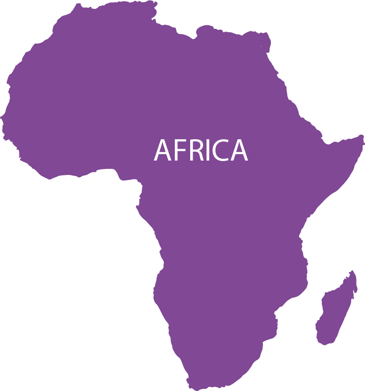
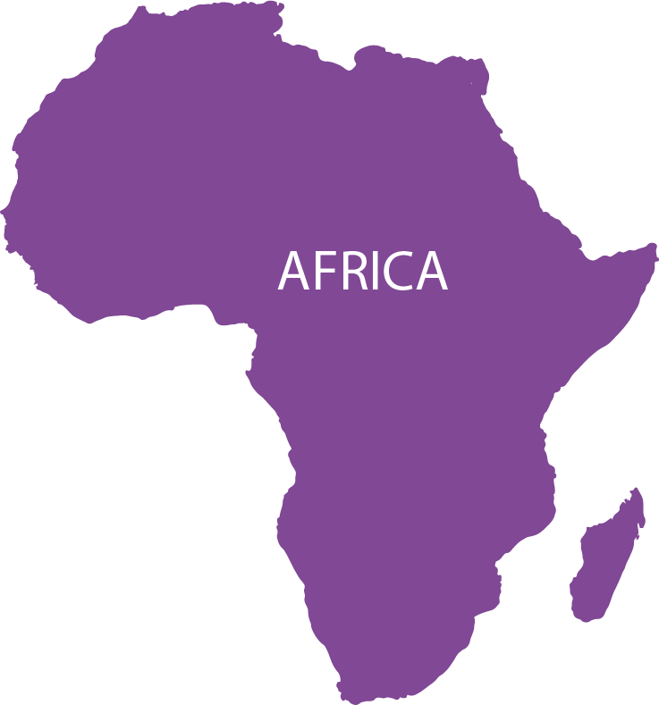

El continente Americano es uno de los continentes más grandes. De hecho, es el segundo más grande del planeta y
el tercero en cantidad de población.
Tiene un clima variado por su extensión y otras características ambientales.
Gracias a que es tan grande, América se divide en América del Sur, América Central y América del Norte.
Aprendamos un poco más de este maravilloso continente.
Cuál es el origen del nombre de América
América es el único continente que lleva su nombre en honor a una persona, el comerciante, cosmógrafo y
explorador Américo Vespucio.
Aunque los europeos encontraron América gracias a los viajes de Cristóbal Colón, este continente lleva el nombre
de Vespucio
porque fue él el primero en darse cuenta, en una de las expediciones que realizó, que Colón no había dado la
vuelta al
mundo y llegado a Asia, sino que ésta se trataba de una masa de Tierra diferente, en realidad otro continente.


 
